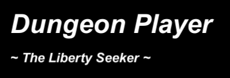

ある時は、ダンジョンの構成は人間の性格・チーム構成の影響を受け様々に形成を変える。
ある時は、ダンジョンを進行に応じて、対象の人に関与する重大な事象への影響を及ぼす。
ある時は、ダンジョンで「神に試練」そして「神の遺産」が設定され、それを受諾する権利が可能が与えられる。
ある時は、ダンジョンは、対象の人間に内在している精神、想い、願いを媒体とし、それを増幅し、事象として反映させてくる。
ある時は、ダンジョンが人へ授ける最終概念は「人の願い」を叶える。
【自由】束縛するものブライヤード < The Restrainer >
自由とは、本能に赴く自由な振る舞いにあらず。
自由とは、決められた事象をこなす行いにあらず。
自由とは、制約を課さない無制限な状態にあらず。
自由とは、完全に束縛された世界である。これを認識せよ、アイン・ウォーレンス。
さすれば、完全なる自由が得られるであろう。
【希望】沈降せしものディープシー < The Akashic >
希望を持て、さすれば絶望の中でさえ、生きる事自体が可能となる。
希望を持て、さすれば虚無の空間の中でさえ、何かを生み出す事となる。
希望を持て、さすれば自己意義を消失した時間でさえ、意義を見出す事となる。
希望とは、完全に何も無い沈降した世界に生まれるものである。これを認識せよ、アイン・ウォーレンス。
さすれば、完全なる希望が得られるであろう。
【成長】 凍てつくものアゾルド < The Desolate >
成長とは何か、それは歩を進めようとした者にのみ、認識されるものである。
成長とは何か、それは歩を進めている間の者には、認識できないものである。
成長とは何か、それは歩を進めてきた者にのみ、認識されるものである。
成長とは何か、それは最終的な生成形態として凍結されるために認識されるものである。
成長とは、完全に凍結されうる生成形態そのものを指す。これを認識せよ、アイン・ウォーレンス。
さすれば、完全なる成長が得られるであろう。
【困難】 黙考せしものジード < The Idea-Cage >
困難とは、完全決定な事象である。何故なら、困難とは個々の人間が感じる特性であるため。
困難とは、回避不可能な事象である。何故なら、回避しても次なる困難が訪れるため。
困難とは、連続的な事象である。何故なら、困難とは初めから存在せず連鎖そのものであるため。
困難とは、完全に黙考し見つけられた終着地点である。これを認識せよ、アイン・ウォーレンス。
さすれば、完全なる困難への克服が得られるであろう。
【真実】 AlakhVes T Etula (The End of the World)
真実とは、全ての真実そのものが時間と共に移り変わり流れゆくこと。
真実とは、全ては一つであり、そして一つ一つが全てであること。
真実とは、全てにおいて、絶対法則に従い推移すること。
真実とは、全ては消え去ること。そして全てが生まれ出ること。
真実とは、この現世そのものの終わり、そして始まりが起こる事をさす。これを認識せよ、アイン・ウォーレンス。
さすれば、完全なる真実が得られるであろう。